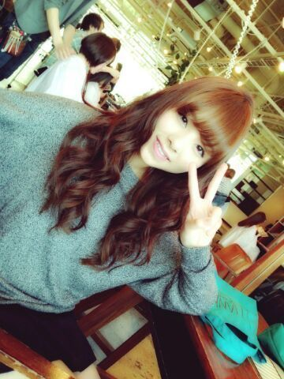

はーーーい ^ ^ /
皆ちゃま−?
こんばんわ〜と
こんにちは〜 )))
今日も１日頑張〜?
ろってぃ− !!!
やあ Rotty☆でぃす.

↑美容院 ☆ミ
仕上がりこんな感じやったの〜(*^^*)
終わったあと
ゆるフワん(( ´▽`) と
巻いてくれたおん.
どうかな?
ぴょん
まいまい♪
お誕生日おめでとお.
1番歳上で いつもメンバーを
支えてくれて ありがとうです.
うれちいです(〃З〃)
まいまい大好きん.
ぴょん.
３つ前のblogのことなんだけど...
皆さんコメント
ありがとうございます.
タイトルからして
まひろがあまり元気ない感じだと
思ってくださり、
なぐさめの言葉をくれたりだとか...
勇気づけられました !
皆 ありがとう .
ぴょん
あww ! !
今日 日曜は 個別握手会 ♪
皆さんとお話しできること
楽しみにしてます .
待ってるねん(*´▽`*)
自分は
このコーディネートが
1番 あきないし
おちつく気がきします(〃‐〃)
Thank-you , Rottyより.のし